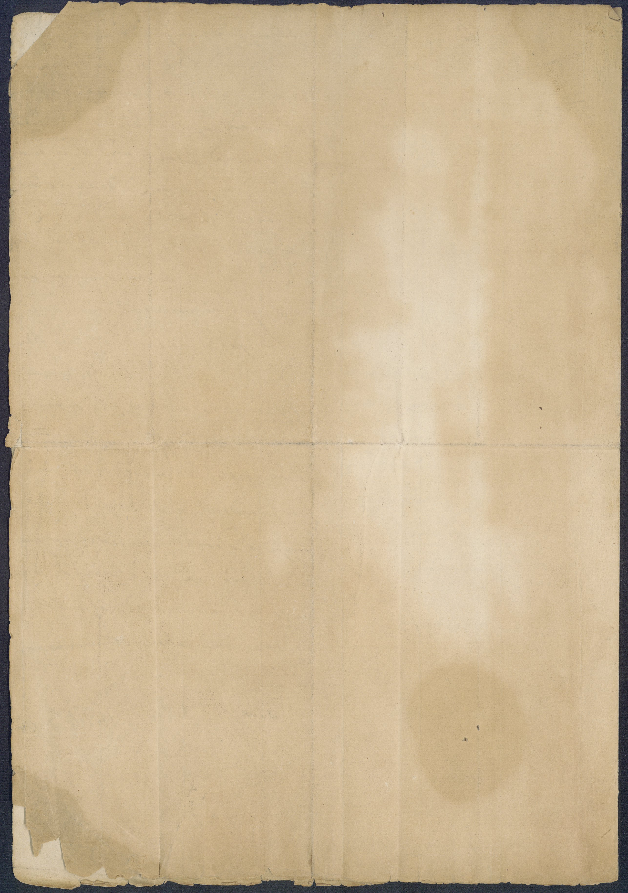
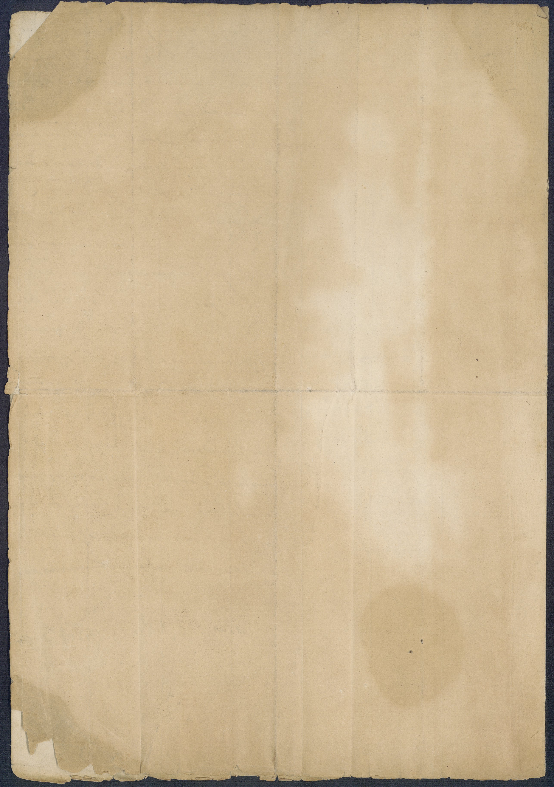

Vincenzo Bellini a Stefano Notarbartolo, duca di Sammartino, in Catania, [maggio] 1819

 

Vincenzo Bellini, e Ferlito spinto dal proprio genio, dall'esempio, e dalla Educazione, che ha ricevuto dai suoi, Avo, e Padre, ha professato, com'eglino, la Musica sin dai più teneri anni, tantoc chétantoché nella sua appena giovanile età ha prodotto alcune composizioni, il merito delle quali, ignoto a lui, è stato applaudito dai suoi amici, com patito dagl'indifferenti, e non di sprezzato dagli emuli. Volendo però soddisfare quel desiderio inestingui bile di apprendere nelle scuole su periori, e rinomate quel gusto, che si ammira da stupidi nelle carte, che qui pervengono, ma che non si sa, né può imitarsi, mancandoci i principii, ne viene impossibilitato dalla sua povertà. Figlio di un Padre senza rendite di sorte alcuna, e carico di numerosa famiglia, e Nipote di un Avo dell'uguale condizione, non può sperare il menomo sussidio, di cui ha preciso bisogno, per almeno portarsi in Napoli, ove non men, che in altri 188 Supp 3. Mag 1819 SS88. paesi dell'Europa, Fiorisce quest'arte, per commorarvi tanto, quanto sarà ne cessario, ad arrivare a quella perfezione, che permetter gli potranno i lumi ac quistati, e lo sviluppo della propria inclinazione: In quest'angustia non ha dimenticato, che appartiene per nascita ad una Città, che, non delle ultime in quest'Isola, procura di non deca dere per ogni ramo di quella rinoman za, di cui ha goduto; e le arti del la Pittura, e della Scultura hanno meritato la pubblica considerazione, onde rianimarsi, e perfezionarsi colla spe dizione di alcuni Individui, alle Scuole più celebri dell'Europa; Non inferiore la Musica tanto oggi conosciuta nelle colte nazioni, per non essere trascura ta tra noi, viene l'Esponente a pre sentarsi a lei Sig:rSignor Duca Intendente, cui, dopo avere umiliato la sua po vertà, il suo genio, e la sua disposi zione, passa a pregare ad interpor re la di lei auttorità, affinché si prestasse da questo Civico Patrimo nio tanto, quanto bastar possa alla sua anche scarsa sussistenza, fuori della propria famiglia, e della propria Patria, ed a corrispondenza di come si viene di pratticarepraticare in pro dell'Inviati apprendisti di Pittura, e della Scultura, quando non si vorrà con siderare la prestanza dell'arte del Ricorrente, la sua onesta estrazione, e la decente educazione, che ha ricevu to: Conoscendosi universalmente que sto bisogno, ed anziosoansioso il Ricorrente di soddisfarlo insieme colle sue bra me, e non eccessive le sue limita te pretese, si augura, che saranno accolte le sue preghiere, ed il Ricorrente grato all'interesse, che sarà per prendere in di lui favore la propria Patria, promette per quanto arriverà la sua abilità di sod disfare, e contentare la pubblica aspettazione
Materiale:
Carta sottile di colore beige.
Filigrana:
Filigrana di forma circolare leggermente visibile raffigurante uno stemma, posizionata nella zona centrale della carta 1v, visibile principalmente per metà, nella zona del folio non coperta da testo. La filigrana si espande per qualche centimetro attorno allo stemma.
Timbri:
Non sono presenti tracce di sigilli, timbri o francobolli.
Dimensioni:
302x213mm
Piegature:
La lettera è composta da due carte (un bifoglio). La lettera è scritta su tre facciate. La lettera presenta inoltre un'ulteriore piegatura verticale a circa un terzo della larghezza del folio. Sembra essere stato piegato tre volte, risulta infatti una divisione simmetrica in otto sezioni di pari dimensione, ogni facciata viene così divisa in quattro sezioni rettangolari.
Condizioni fisiche:
Lettera in buone condizioni fisiche. Presenta due lacerazioni, la prima nell'angolo superiore destro della carta 2r, la seconda in quello inferiore. I bordi sono tutti leggermente frastagliati a causa dell'invecchiamento. Varie grandi macchie marroni su tutte le facciate, probabilmente anch'esse dovute all'invecchiamento del supporto materiale.
- Una prima mano, in inchiostro marrone, che non è di Vincenzo Bellini ha scritto il corpo della supplica, in bella grafia, su una colonna per foglio.
- Firma di Bellini (unica sua mano in tutta la lettera). La firma è posta alla fine della lettera sulla carta 2r.
- Sulla carta 1r una mano ha annotato : "Supp | 3. Mag 1819 | SS88.".
- Uno stesso catalogatore ha probabilmente scritto due annotazioni: un primo numero di catalogo (188) nell'angolo superiore destro della carta 1r, e un numero di catalogo (189) nell'angolo superiore destro della carta 2r.
- Una mano ha annotato nell'angolo superiore sinistro della carta 1r una sigla illegibile.
- Nella carta 1r una mano ha annotato il testo "S. E. Sig:r Duca di Sammartino Intendente della Prov.a di Catania".